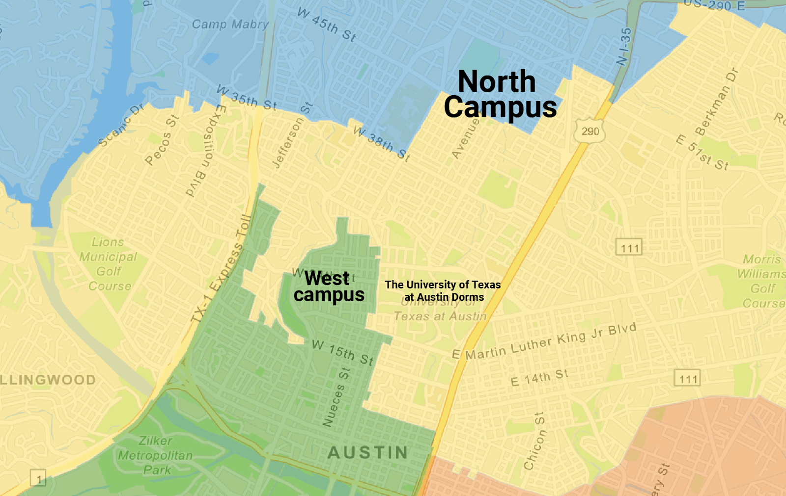

Community Impact
A community’s effort to be one in the eyes of the Congress
By Gabrielle Wongso

During the winter storm in February, many Texans suffer from the lack of heat, electricity, and water. Katya Ehresman, a graduating senior studying government and public policy, was one of them. During the storm, she tried to contact her congressional representative to answer and begged them to turn on their electricity and water, but no one ever picked up. To her despair, she called Llyod Doggett's Congressional district office, TX-25, to get some answer.
The University of Texas at Austin is often considered as the center of Austin, with its vibrant Texas Longhorn traditions. With 50,000 students and more faculty and staff, one would expect that the school is its own community, yet it is actually a divided one in the eyes of congress.
The University of Texas at Austin (UT) is divided into many different districts through gerrymandering, making the community's voice much smaller than it is.
According to Ehresman, as a student voter deputy registrar, she often has to explain the different ballots that exist in the community, especially when a student's friend lives two blocks away, but they have very different ballots.
She states that she had multiple occasions where students reached out to her said that they couldn't vote because they found out their ballots are different compare to what they had researched, which ultimately caused them to not vote during the election.
"[Students] show up to the voting center as uninformed voters, and then they leave before they even get a chance to vote because they get scared in line because they have the wrong person that they've researched on their ballot. And that's really disappointing as someone who thinks that everybody should want every student to vote in the election," said Ehresman.
Following the 2020 Census, the U.S. Census Bureau announced that Texas would gain two additional congressional seats, most of any state in the country, making its share of votes in the U.S. House of Representative increase to 28 for the next decade.
The University of Texas student is currently fighting to make the community a united voice rather than a divided voice in the eyes of congress.
This Summer, the governor will call a special session to discuss redistricting as 2021 is the year to draw new lines for the state. With Republicans in the majority, they will have the most control during the process. This is where the students' fight starts.
According to Ehresman, students are currently gathering testimonies to be presented in the Summer regarding why the UT community is united. Then, students were also reaching out to state legislators' offices to discuss and convinced them why the community should be united.
Ehresman states that at the very least, the West campus area, an area where the majority of students living off-campus, the North Campus community, an area where the majority of graduate students live, and the campus dorms should not be separated.
"We are advocating that like at the bare minimum, the parts of student districts should not be split," said Ehresman.